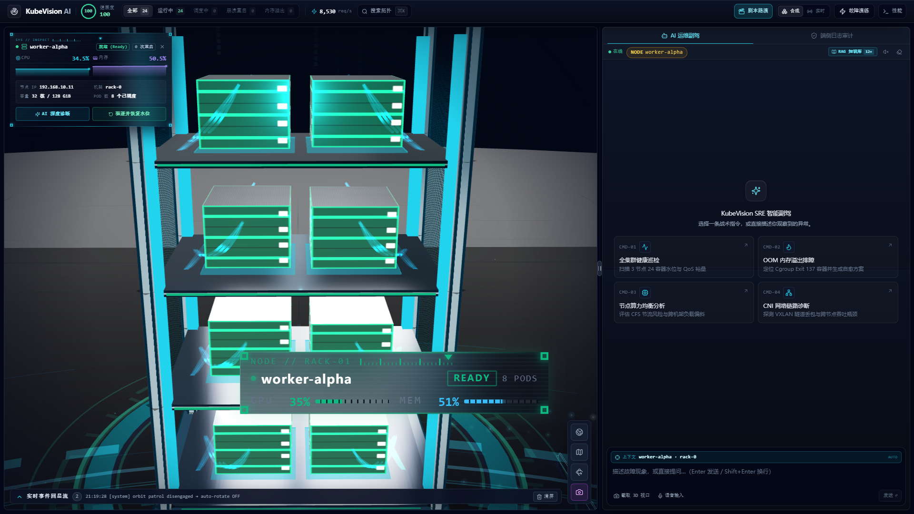
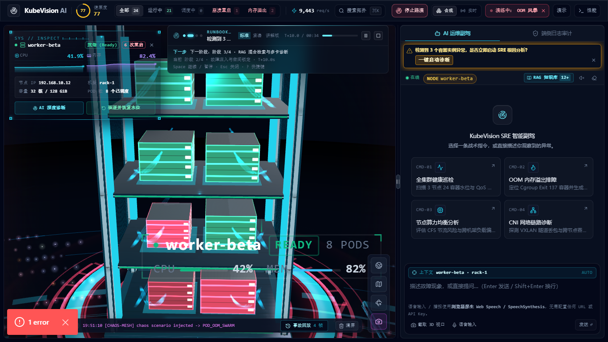
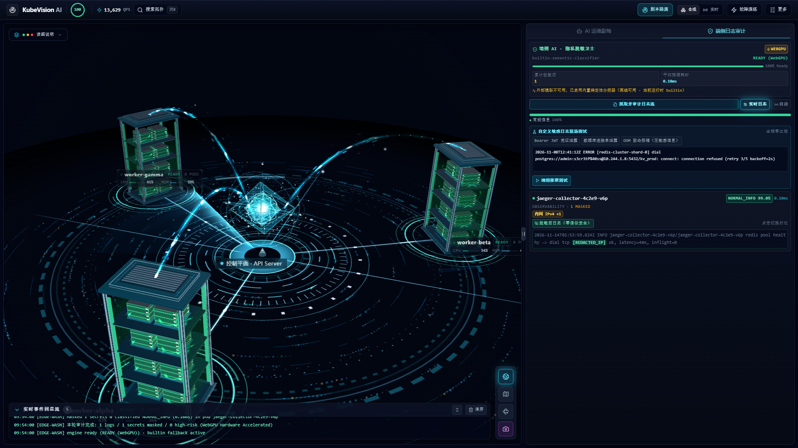
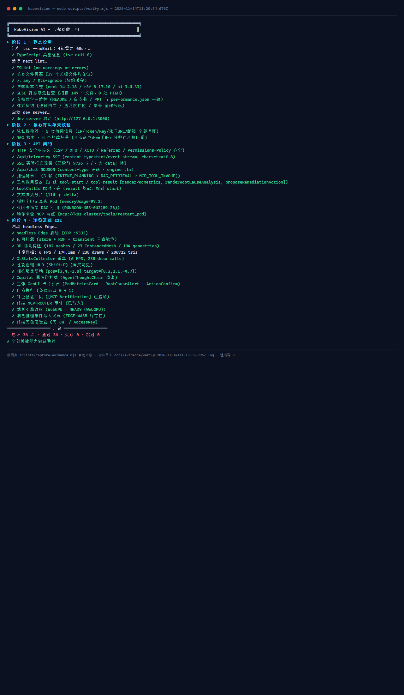
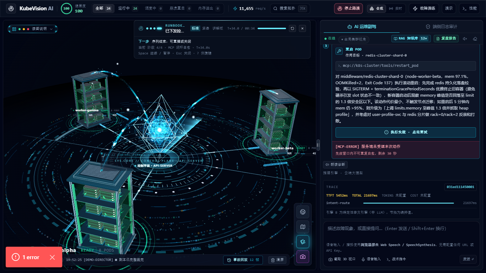
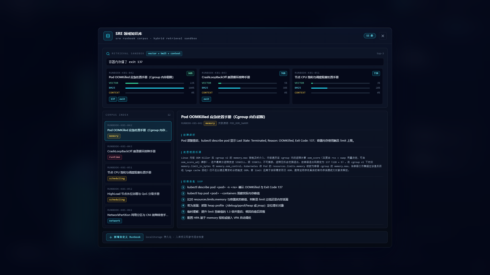
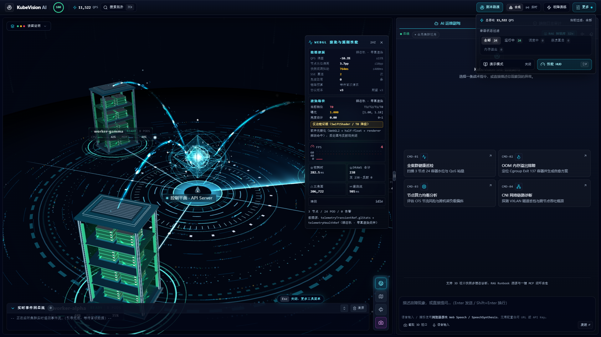

云原生三维空间态势感知与智能自愈副驾
第七届传智杯全国高校IT技能大赛（全国高校 AI Web 开发挑战赛） · AI WEB 网页开发挑战赛 · 智启未来赛道 · ID 10037
PII 脱敏
Worker 语义分类
原始凭证不出域
意图路由 → 混合 RAG
引擎 A：LLM 流式
引擎 B：确定性容灾
MCP 工具卡片
HITL 确认
回执 + 审计 + 复盘



6 类 PII 正则
100 条批量 8.88ms
≈11,264 条/秒
无 WebGPU 时降级 builtin
页面如实标注当前引擎
环境：win32 · Ryzen 9 7845HX · SwiftShader（软渲染）· Node 24 — FPS 不作为性能证据




| 角色 | 分工 |
|---|---|
| 队长（待填） | 整体架构 / AI Agent 工作流 / 答辩主讲 |
| 队员 1（待填·选填） | 3D 渲染工程 / 性能优化 / 前端 HUD 交互 |
| 队员 2（待填·选填） | 混合 RAG 检索 / 端侧隐私审计 / 自动化验收 |
| 指导教师（待填·≤2名） | 选题指导 / 技术路线评审 |
赛制规范：每队 1–3 名同校在校学生（严禁降组），指导教师不超过 2 名。第三方：Next.js / React / three / R3F / drei / postprocessing / zustand / AI SDK / Transformers.js / Tailwind（MIT/Apache-2.0）；端侧模型 Xenova/all-MiniLM-L6-v2（Apache-2.0）。详见 THIRD_PARTY_NOTICES.md。